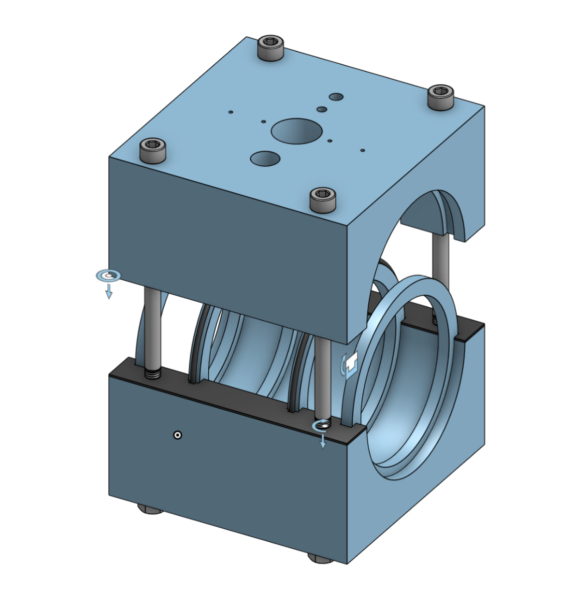

Project SAPPHIRE
Aug 2024 - Present
Affiliation: Michigan Carbon Capture, University of Michigan
Keywords: carbon capture, urban wastewater, electrolytic cell, microbes
Project Website
Year 1: Cell Design
Project SAPPHIRE is one of the project team arms of Michigan Carbon Capture, a multidisciplinary team of scientists and engineers at U of M that care deeply about the climate crisis and want to be a part of the solution. Our work focuses specifically on urban wastewater systems as an understudied source of carbon emissions.
Our original concept combined recent research from several chemical and environmental engineering labs to identify a chemical process that could simulataneously capture carbon dioxide and produce hydrogen gas. Focusing on the sustainability impact of this device, we found pathways in which our device could operate under minimal input power, use industrial byproducts as input materials, and produce fuel that does not worsen our current climate crisis.
Beginning as a team member in the cell culture division, I spent a year contributing to our research of microbe biology and how they might contribute to the complex electrochemical reactions taking place in existing electrolytic cells.
Year 2: Cell Construction
In August 2025, I was elected Operations Lead of our project team. My co-lead and I have focused our work on moving the cell from a theoretical concept to a real-life funcitoning prototype. Over the past several months, we have designed and 3D printed a multi-chamber enclosure, organized data flow for real-time sensor feedback, obtained activated sluge from our local wastewater plant, and run sequestration experiments to identify the ideal inputs to the system.

This work has involved many safety concerns, as we are working with biological hazards (activated sludge), gaseous hazards (hydrogen gas), and electrical hazards (electrolytic cell potentiometer). We have written copious safety document sheets and standard operating procedures and communicated extensively with the proper authorities to maintain a high standard of safety for our whole team.
We are currently preparing for our first full-device tests in March 2026, where we will test and iterate upon the design our team has been working on for the past two years.